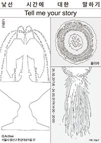

"writingsaboutbuildings" designs mechanism.
Public space mediates memory of community.
Also, we write about building to narrate collective culture and to make imagination from region.

(ENG)Abandoned
(ENG)Cognition and Recognition
(KOR)Empathetic, Emotional, Embracing
(KOR)Placemaking of Today's Museum
(KOR)Rococo Art:Contemporaneity of Taste
(ENG)The Space of DOOR The Scene of DOOR
Copyright 2024. Dongjoo Lee. All rights reserved.
contact info_ writingsaboutbuildings.leee@gmail.com